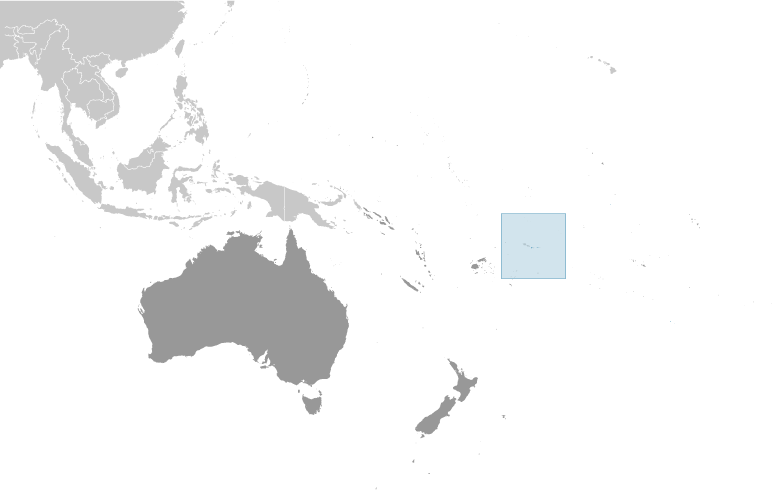

Australia-Oceania :: AMERICAN SAMOA
Introduction :: AMERICAN SAMOA
-
Settled as early as 1000 B.C., Samoa was not reached by European explorers until the 18th century. International rivalries in the latter half of the 19th century were settled by an 1899 treaty in which Germany and the US divided the Samoan archipelago. The US formally occupied its portion - a smaller group of eastern islands with the excellent harbor of Pago Pago - the following year.
Geography :: AMERICAN SAMOA
-
Oceania, group of islands in the South Pacific Ocean, about halfway between Hawaii and New Zealand14 20 S, 170 00 WOceaniatotal: 199 sq kmland: 199 sq kmwater: 0 sq kmnote: includes Rose Island and Swains Islandcountry comparison to the world: 216slightly larger than Washington, DC0 km116 kmterritorial sea: 12 nmexclusive economic zone: 200 nmtropical marine, moderated by southeast trade winds; annual rainfall averages about 3 m; rainy season (November to April), dry season (May to October); little seasonal temperature variationfive volcanic islands with rugged peaks and limited coastal plains, two coral atolls (Rose Island, Swains Island)mean elevation: NAelevation extremes: lowest point: Pacific Ocean 0 mhighest point: Lata Mountain 964 mpumice, pumiciteagricultural land: 21.7%arable land 13.3%; permanent crops 8.4%; permanent pasture 0%forest: 78.3%other: 0% (2011 est.)0 sq km (2012)cyclones common from December to Marchvolcanism: limited volcanic activity on the Ofu and Olosega Islands; neither has erupted since the 19th centurylimited natural freshwater resources; the water division of the government has spent substantial funds in the past few years to improve water catchments and pipelinesPago Pago has one of the best natural deepwater harbors in the South Pacific Ocean, sheltered by shape from rough seas and protected by peripheral mountains from high winds; strategic location in the South Pacific Ocean
People and Society :: AMERICAN SAMOA
-
51,504 (July 2017 est.)country comparison to the world: 210noun: American Samoan(s) (US nationals)adjective: American SamoanPacific Islander 92.6% (includes Samoan 88.9%, Tongan 2.9%, other .8%), Asian 3.6% (includes Filipino 2.2%, other 1.4%), mixed 2.7%, other 1.2% (2010 est.)Samoan 88.6% (closely related to Hawaiian and other Polynesian languages), English 3.9%, Tongan 2.7%, other Pacific islander 3%, other 1.8%note: most people are bilingual (2010 est.)Christian 98.3%, other 1%, unaffiliated 0.7% (2010 est.)0-14 years: 30.28% (male 8,017/female 7,580)15-24 years: 18.79% (male 4,846/female 4,831)25-54 years: 36.38% (male 9,274/female 9,463)55-64 years: 8.58% (male 2,186/female 2,232)65 years and over: 5.97% (male 1,452/female 1,623) (2017 est.)total: 25.5 yearsmale: 25.1 yearsfemale: 26 years (2017 est.)country comparison to the world: 121-1.3% (2017 est.)country comparison to the world: 23319.6 births/1,000 population (2017 est.)country comparison to the world: 825.9 deaths/1,000 population (2017 est.)country comparison to the world: 168-26.7 migrant(s)/1,000 population (2017 est.)country comparison to the world: 222urban population: 87.1% of total population (2017)rate of urbanization: 0.63% annual rate of change (2015-20 est.)PAGO PAGO (capital) 48,000 (2014)at birth: 1.06 male(s)/female0-14 years: 0.96 male(s)/female15-24 years: 0.96 male(s)/female25-54 years: 1.06 male(s)/female55-64 years: 0.96 male(s)/female65 years and over: 0.85 male(s)/femaletotal population: 1 male(s)/female (2016 est.)total: 11.3 deaths/1,000 live birthsmale: 13.2 deaths/1,000 live birthsfemale: 9.3 deaths/1,000 live births (2017 est.)country comparison to the world: 128total population: 73.4 yearsmale: 71.3 yearsfemale: 75.6 years (2017 est.)country comparison to the world: 1342.68 children born/woman (2017 est.)country comparison to the world: 69improved:urban: 100% of populationrural: 100% of populationtotal: 100% of populationunimproved:urban: 0% of populationrural: 0% of populationtotal: 0% of population (2015 est.)improved:urban: 62.5% of populationrural: 62.5% of populationtotal: 62.5% of populationunimproved:urban: 37.5% of populationrural: 37.5% of populationtotal: 37.5% of population (2015 est.)NANANAnote: active local transmission of Zika virus by Aedes species mosquitoes has been identified in this country (as of August 2016); it poses an important risk (a large number of cases possible) among US citizens if bitten by an infective mosquito; other less common ways to get Zika are through sex, via blood transfusion, or during pregnancy, in which the pregnant woman passes Zika virus to her fetus (2016)NA
Government :: AMERICAN SAMOA
-
conventional long form: Territory of American Samoaconventional short form: American Samoaabbreviation: ASetymology: the name Samoa is composed of two parts, "sa" meaning "sacred" and "moa" meaning "center," so the name can mean Holy Center; alternatively, it can mean "place of the sacred moa bird" of Polynesian mythologyunincorporated and unorganized territory of the US; administered by the Office of Insular Affairs, US Department of the Interiorpresidential democracy; a self-governing territory of the USname: Pago Pagogeographic coordinates: 14 16 S, 170 42 Wtime difference: UTC-11 (6 hours behind Washington, DC, during Standard Time)none (territory of the US); there are no first-order administrative divisions as defined by the US Government, but there are 3 districts and 2 islands* at the second order; Eastern, Manu'a, Rose Island*, Swains Island*, Westernnone (territory of the US)Flag Day, 17 April (1900)adopted 17 October 1960; revised 1 July 1967; amended several times, last in 2013 (2016)mixed legal system of US common law and customary lawsee United States18 years of age; universalchief of state: President Donald J. TRUMP (since 20 January 2017); Vice President Michael R. PENCE (since 20 January 2017)head of government: Governor Lolo Matalasi MOLIGA (since 3 January 2013)cabinet: Cabinet consists of 12 department directors appointed by the governor with the consent of the Legislative Assemblyelections/appointments: president and vice president indirectly elected on the same ballot by an Electoral College of 'electors' chosen from each state to serve a 4-year term (eligible for a second term); under the US Constitution, residents of unincorporated territories, such as American Samoa, do not vote in elections for US president and vice president; however, they may vote in Democratic and Republican presidential primary elections; governor and lieutenant governor directly elected on the same ballot by absolute majority popular vote in 2 rounds if needed for a 4-year term (eligible for a second term); election last held on 8 November 2016 (next to be held in November 2020)election results: Lolo Matalasi MOLIGA reelected governor in first round; percent of vote - Lolo Matalasi MOLIGA (independent) 60.2%, Faoa Aitofele SUNIA (Democratic Party) 35.8%, Tuika TUIKA (independent) 4%description: bicameral Fono or Legislative Assembly consists of the Senate (18 seats; members indirectly selected by regional governing councils to serve 4-year terms) and the House of Representatives (21 seats; 20 members directly elected by simple majority vote and 1 decided by public meeting on Swains Island; members serve 2-year terms)elections: Senate - last held on 8 November 2016 (next to be held in November 2020); House of Representatives - last held on 8 November 2016 (next to be held in November 2018)election results: Senate - percent of vote by party - NA; seats by party - independent 18; House of Representatives - percent of vote by party - NA; seats by party - independent 20note: American Samoa elects 1 member by simple majority vote to serve a 2-year term as a delegate to the US House of Representatives; the delegate can vote when serving on a committee and when the House meets as the Committee of the Whole House, but not when legislation is submitted for a “full floor” House vote; election of delegate last held on 8 November 2016 (next to be held in November 2018)highest court(s): High Court of American Samoa (consists of the chief justice, associate chief justice, and 6 Samoan associate judges and organized into trial, family, drug, and appellate divisions); note - American Samoa has no US federal courtsjudge selection and term of office: chief justice and associate chief justice appointed by the US Secretary of the Interior to serve for life; Samoan associate judges appointed by the governor to serve for lifesubordinate courts: district and village courtsDemocratic Party [Fagafaga Daniel LANGKILDE]Republican Party [Utu Abe MALAE, chairman]AOSIS (observer), Interpol (subbureau), IOC, PIF (observer), SPCnone (territory of the US)none (territory of the US)blue, with a white triangle edged in red that is based on the fly side and extends to the hoist side; a brown and white American bald eagle flying toward the hoist side is carrying 2 traditional Samoan symbols of authority, a war club known as a "fa'alaufa'i" (upper; left talon), and a coconut-fiber fly whisk known as a "fue" (lower; right talon); the combination of symbols broadly mimics that seen on the US Great Seal and reflects the relationship between the US and American Samoaa fue (coconut fiber fly whisk; representing wisdom) crossed with a to'oto'o (staff; representing authority); national colors: red, white, bluename: "Amerika Samoa" (American Samoa)lyrics/music: Mariota Tiumalu TUIASOSOPO/Napoleon Andrew TUITELELEAPAGAnote: local anthem adopted 1950; as a territory of the United States, "The Star-Spangled Banner" is official (see United States)
Economy :: AMERICAN SAMOA
-
American Samoa has a traditional Polynesian economy in which more than 90% of the land is communally owned. Economic activity is strongly linked to the US with which American Samoa conducts most of its commerce. Tuna fishing and tuna processing plants are the backbone of the private sector with canned tuna the primary export. The two tuna canneries accounted for 13.1% of employment in 2013.In late September 2009, an earthquake and the resulting tsunami devastated American Samoa and nearby Samoa, disrupting transportation and power generation, and resulting in about 200 deaths. The US Federal Emergency Management Agency oversaw a relief program of nearly $25 million. Transfers from the US Government add substantially to American Samoa's economic well-being.Attempts by the government to develop a larger and broader economy are restrained by Samoa's remote location, its limited transportation, and its devastating hurricanes. Tourism is a promising developing sector. In 2015, a new fish processing company completed refurbishing the processing facilities left behind by one of the two canneries that closed in 2009 and opened a new cannery. With two operating canneries once again, fish processing and exports will rise in the coming years.$711 million (2013 est.)$718 million (2012 est.)$647 million (2012 est.)country comparison to the world: 207$748.6 million (2005)-2.4% (2013 est.)-2.7% (2012 est.)0.6% (2012 est.)country comparison to the world: 205$13,000 (2013 est.)$13,100 (2012 est.)$11,700 (2011 est.)country comparison to the world: 118household consumption: 54.6%government consumption: 52.8%investment if fixed capital: 2.7%investment in inventories: 2.3%exports of goods and services: 54.4%imports of goods and services: -66.8% (2012)agriculture: 27.4%industry: 12.4%services: 60.2% (2012)bananas, coconuts, vegetables, taro, breadfruit, yams, copra, pineapples, papayas; dairy products, livestocktuna canneries (largely supplied by foreign fishing vessels), handicraftsNA%16,090 (2013)country comparison to the world: 215agriculture: NAindustry: 13.1%services: 86.9% (2013)29.8% (2005)country comparison to the world: 202NA%lowest 10%: NA%highest 10%: NA%revenues: $241.2 millionexpenditures: $243.7 million (2013 est.)32.2% of GDP (2013 est.)country comparison to the world: 68-0.3% of GDP (2013 est.)country comparison to the world: 481 October - 30 September2.1% (2013)3.5% (2012)country comparison to the world: 125$459 million (2013 est.)$489 million (2012)country comparison to the world: 174canned tuna 93%Australia 21.6%, Ghana 16.1%, Netherlands 11.5%, Burma 8.1%, South Korea 7.9%, Colombia 4.7%, Indonesia 4.3% (2016)$564 million (2013 est.)$508 million (2012)country comparison to the world: 190raw materials for canneries, food, petroleum products, machinery and partsSingapore 22.6%, NZ 19.1%, Samoa 8.7%, Malaysia 8.2%, Fiji 7.6%, South Korea 7.4%, Australia 4.6% (2016)$NAthe US dollar is used
Energy :: AMERICAN SAMOA
-
population without electricity: 22,219electrification - total population: 59%electrification - urban areas: 60%electrification - rural areas: 45% (2012)163 million kWh (2015 est.)country comparison to the world: 194151.6 million kWh (2015 est.)country comparison to the world: 1960 kWh (2016 est.)country comparison to the world: 1010 kWh (2016 est.)country comparison to the world: 12041,000 kW (2015 est.)country comparison to the world: 198100% of total installed capacity (2015 est.)country comparison to the world: 210% of total installed capacity (2015 est.)country comparison to the world: 420% of total installed capacity (2015 est.)country comparison to the world: 1590% of total installed capacity (2015 est.)country comparison to the world: 1690 bbl/day (2016 est.)country comparison to the world: 1070 bbl/day (2014 est.)country comparison to the world: 890 bbl/day (2014 est.)country comparison to the world: 950 bbl (1 January 2017 es)country comparison to the world: 1070 bbl/day (2014 est.)country comparison to the world: 1162,375 bbl/day (2015 est.)country comparison to the world: 1910.09 bbl/day (2014 est.)country comparison to the world: 1272,346 bbl/day (2014 est.)country comparison to the world: 1850 cu m (2013 est.)country comparison to the world: 1050 cu m (2013 est.)country comparison to the world: 1550 cu m (2013 est.)country comparison to the world: 630 cu m (2013 est.)country comparison to the world: 860 cu m (1 January 2014 es)country comparison to the world: 112600,000 Mt (2013 est.)country comparison to the world: 175
Communications :: AMERICAN SAMOA
-
total subscriptions: 10,000subscriptions per 100 inhabitants: 18 (July 2016 est.)country comparison to the world: 199general assessment: good telex, telegraph, facsimile, and cellular telephone servicesdomestic: domestic satellite system with 1 Comsat earth stationinternational: country code - 1-684; satellite earth station - 1 (Intelsat-Pacific Ocean)3 TV stations; multi-channel pay TV services are available; about a dozen radio stations, some of which are repeater stations (2009).astotal: 17,000percent of population: 31.3% (July 2016 est.)
Transportation :: AMERICAN SAMOA
-
3 (2016)country comparison to the world: 192total: 3over 3,047 m: 1914 to 1,523 m: 1under 914 m: 1 (2017)total: 241 km (2008)country comparison to the world: 208major seaport(s): Pago Pago
Military and Security :: AMERICAN SAMOA
-
defense is the responsibility of the US
Transnational Issues :: AMERICAN SAMOA
-
Tokelau included American Samoa's Swains Island (Olosega) in its 2006 draft independence constitution